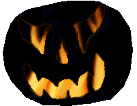

Origem
e tradição
Na Irlanda do século V (a.C),
o dia 31 de outubro fazia parte de um conjunto de quatro datas
comemorativas do calendário celta que marcava a transição
das estações, o período de plantação
e colheita, e o ciclo vital da Terra. A primeira data era celebrada
no dia 2 de Fevereiro (conhecido como O Dia da Marmota),
em honra a deusa da cura Brigith. No mês de maio
celebrava-se o Beltane, considerado o dia que iniciava
a temporada de semear. Nesta data realizavam-se rituais de fertilidade
e prosperidade para incentivar o crescimento da lavoura. A terceira
data ocorria em agosto: a festa da colheita em reverência
ao deus sol Lugh. Finalmente, no dia 31 de outubro celebrava-se
um feriado denominado Samhaim, que marcava o final do
ano celta em honra ao deus pagão Samhan (Senhor
dos Mortos), também o fim do verão e início
do inverno.
A expressão Halloween tem origem
na contração errônea da expressão inglesa
All Hallows Eve (que significa Dia de Todos os Santos).
Esta data foi instituída pelo Papa Bonifácio IV,
e era celebrada no dia 13 de maio. Porém, em 835 o Papa
Gregório III alterou o Dia de Todos os Santos para o primeiro
dia de novembro. Sua intenção era unir as crenças
cristãs e pagãs, aproximando as datas comemorativas.
Outro objetivo do Papa era apaziguar os conflitos entre esses
povos no noroeste europeu. Assim, os cristãos celebravam
o dia dos santos falecidos no dia posterior ao rito pagão
do Senhor dos Mortos. Desta forma, a expressão Halloween
tornou-se sinônimo da celebração pagã
de 31 de outubro.
O Samhaim é cercado de mitos e crenças
que influenciavam a cultura dos povos europeus desde o período
pré-cristão. Nesta data, os Druidas (sacerdotes
celtas) reuniam-se e realizavam rituais dançando em torno
de uma fogueira e oferecendo o sacrifício de animais. O
caldeirão também era utilizado simbolizando o útero,
e a abundância da Deusa Mãe.
Neste dia, acreditava-se que todas as relações
de tempo e espaço ficavam suspensas, pois o 31 de outubro
não pertencia ao ano velho, tampouco ao novo ano que se
iniciava. Desta forma, os espíritos desencarnados podiam
retornar ao mundo dos vivos e se apossarem dos corpos. Para evitar
esta aproximação, era comum apagar todas as tochas
e fogueiras das aldeias, de modo que o ambiente ficasse escuro,
frio e hostil. Os habitantes vestiam-se com trajes fantasmagóricos
e vagavam pelas ruelas em desfiles barulhentos, a fim de amedrontar
e espantar os espíritos que procuravam corpos a serem possuídos.
Outro costume da tradição celta,
constituía em oferecer alimentos aos espíritos malignos
para que estes não interferissem negativamente em suas
vidas. Com o passar do tempo esta prática foi modificada,
e os alimentos eram dados aos mendigos. Em troca, eles oravam
pelas almas dos entes mortos dos aldeões. Na Irlanda, eram
organizadas procissões para angariar oferendas dos agricultores.
Aqueles que se recusassem, teriam suas colheitas amaldiçoadas
pelos espíritos; uma chantagem que originou o Trick
or Treat (travessuras ou doces). Quando este costume
foi levado pelos imigrantes irlandeses para a Nova Inglaterra
(Estados Unidos), as principais travessuras baseavam-se em escrever
nos muros das casas e retirar a tranca dos portões.
A partir do século IX, os cristãos
europeus adotaram uma prática semelhante denominada Souling.
Naquela época, acreditava-se que as almas dos mortos permaneciam
um período no limbo, e só alcançariam o reino
divino através de muitas orações. Assim,
no dia 2 de novembro os cristãos perambulavam pelas vilas
oferecendo orações pelas almas dos mortos. Em troca,
os familiares davam tortas de pão com groselha chamadas
Soul Cakes. Além dos cristãos, os romanos também
absorveram influências da religiosidade celta. Mas à
medida que a idéia das possessões foi perdendo espaço,
o conceito que envolvia a crença foi transformado em uma
tradição folclórica.
Atualmente, o Halloween é um evento essencialmente
comercial inserido em vários países. Mesmo tendo
origem na Europa, sua popularização deve-se principalmente
a influência da cultura norte-americana em todo mundo. Em
termos mercantis, é uma das datas mais lucrativas, onde
existe um crescimento considerável nas vendas de fantasias,
máscaras e outros artigos relacionados.
Abóboras,
gatos e fogueiras
A mais famosa referência do Halloween é
a abóbora oca, com orifícios cavados e aparência
demoníaca, denominada Jack-o-Lantern. Sua origem
está presente no folclore irlandês. Segundo a lenda,
um homem chamado Jack, notório beberrão e trapaceiro,
esculpiu uma cruz no tronco de uma árvore, prendendo o
diabo em cima dela. Assim, Jack firmou um trato com o Diabo: se
ele nunca o atormentasse, Jack apagaria a cruz do tronco e o deixaria
descer da árvore.
Depois
que Jack morreu, sua entrada no Céu foi recusada devido
ao seu pacto com o Diabo. No inferno, também não
foi aceito devido suas trapaças. Porém, o Diabo
concedeu a Jack uma única vela para iluminar seus caminhos.
Sua chama teria que ser preservada eternamente, então Jack
a colocou dentro de um nabo oco, e esculpiu alguns furos para
dar passagem à luz emitida pela chama.
Portanto, originalmente as Lanternas de Jack
eram feitas com nabos. Mas quando os imigrantes irlandeses aportaram
nos Estados Unidos em 1840, encontraram as abóboras que
são muito mais adequadas. Desta forma, a abóbora
tornou-se o principal símbolo contemporâneo do Halloween.
Os outros símbolos também tiveram
origem na tradição celta, principalmente nas crenças
dos sacerdotes druidas. Por exemplo, o período da lua cheia
era considerado favorável para a realização
de determinados rituais.
Para os druidas o gato era um animal místico.
Acreditava-se que as feiticeiras maléficas poderiam transferir
a alma para seus corpos. Assim, muitos felinos eram sacrificados
quando havia a suspeita de serem "feiticeiras camufladas".
Os seres humanos que praticavam perversidades eram transformados
em gatos como meio de punição, segundo esta crença.
O morcego também adquiriu a reputação
de possuir forças ocultas, por sua habilidade de perseguir
suas presas no escuro. O mamífero também mantinha
as características dos pássaros (no ocultismo, símbolo
da alma) e dos demônios (por ser noturno). Na Idade Média,
acreditava-se que demônios transformavam-se em morcegos.
Máscaras e fantasias eram utilizadas para
afugentar entidades malfeitoras. Além de alterar a personalidade
do usuário, possuíam a propriedade de conectá-lo
aos mundos espirituais. As cores mais comuns no Halloween são
o laranja e preto. Elas estavam associadas à missas em
favor dos mortos celebradas em novembro. As velas de cera de abelha
tinham cor alaranjada, e os esquifes eram cobertos com tecidos
pretos.
Nas celebrações do Samhain, os druidas
construíam grandes fogueiras denominadas Bonfire
(ou Bonefire, Fogo de Ossos), e queimavam vivos
prisioneiros de guerra, criminosos e animais. Eles acreditavam
prever o futuro através do fogo observando a posição
dos corpos em chama.
Por
Spectrum